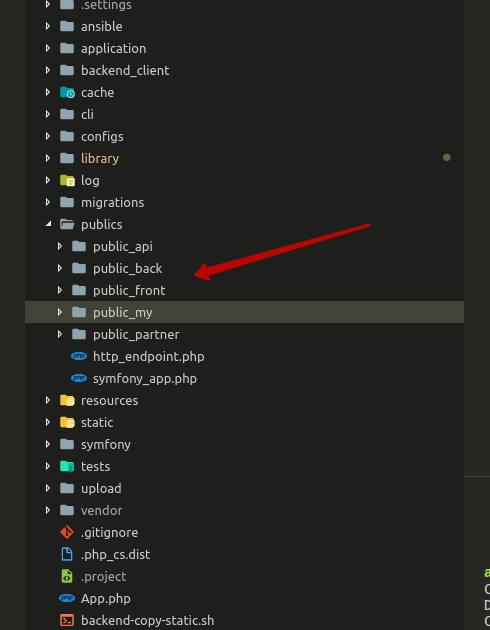

Что на данный момент?
Огромное количество одинаковых файлов
Регистрация в Кабинете


Огромное количество старых стилей, которые необходимо поддерживать

Огромные пересечения стилей!
Регистрация, кабинет, мэйн, ИЕ, Бутстрап, и еще более 30 файлов!
JS валяется как попало!

Логика и на беке...

... и на фронте!

Сборщики, много сборщиков

TS ?

Самое главное...
Работа приносит боль, а должна приносить удовольствие!
Что можно сделать?
- Неоходимо утвердить стек технологий, и оповестить всех разработчиков
- Любое внедрение новой технологии должно обсуждаться.
- Ввести дизайн систему
- Сначала дизайн система, затем верстка
- Флоу принятия дизайна, возможность отправить на доработку доработки


Избавиться от лишних стилей и js
- Четкое разделение продуктов
- Выбрать сборщик
- Определить архитектуру статики
Фреймворк?
Да! Но позже!